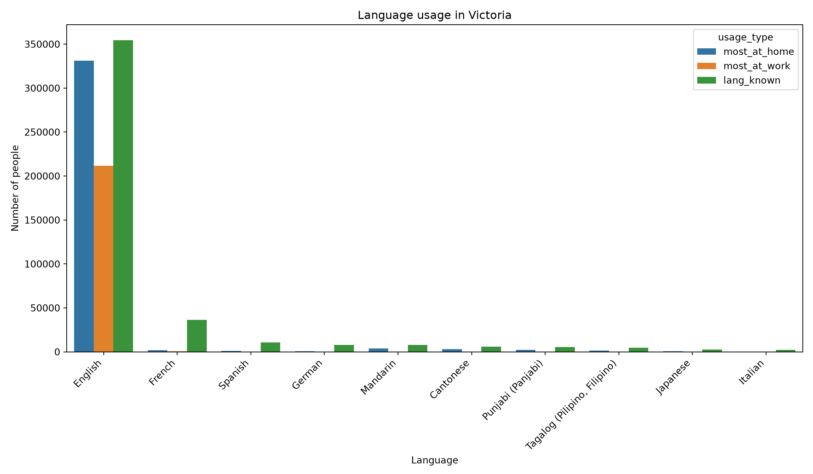

library(tidyverse)
library(reticulate)Bonus (R and Python)
Introduction
We explore the frequency of (non)official languages used in different situations in Canada
library(readxl)
library(tidyverse)
# the data shown below comes from the link https://github.com/ttimbers/canlang/raw/master/inst/extdata/victoria_lang.tsv named victoria. It is about the language used at specific situations and their frequency compared in a single table.
victoria <- read_delim("https://raw.githubusercontent.com/ttimbers/canlang/master/inst/extdata/victoria_lang.tsv", delim = "\t")
head(victoria, 20)# A tibble: 20 × 6
category language mother_tongue most_at_home most_at_work lang_known
<chr> <chr> <dbl> <dbl> <dbl> <dbl>
1 Aboriginal langu… Aborigi… 10 0 0 25
2 Non-Official & N… Afrikaa… 175 50 0 580
3 Non-Official & N… Afro-As… 0 0 0 20
4 Non-Official & N… Akan (T… 20 0 0 0
5 Non-Official & N… Albanian 125 70 0 145
6 Aboriginal langu… Algonqu… 0 0 0 0
7 Aboriginal langu… Algonqu… 5 0 0 0
8 Non-Official & N… America… 40 35 45 435
9 Non-Official & N… Amharic 105 25 0 140
10 Non-Official & N… Arabic 1245 660 10 1650
11 Non-Official & N… Armenian 45 10 0 65
12 Non-Official & N… Assyria… 10 0 0 0
13 Aboriginal langu… Athabas… 0 0 0 0
14 Aboriginal langu… Atikame… 0 0 0 0
15 Non-Official & N… Austro-… 0 0 0 0
16 Non-Official & N… Austron… 40 0 0 90
17 Non-Official & N… Azerbai… 15 10 0 35
18 Aboriginal langu… Babine … 0 0 0 0
19 Non-Official & N… Bamanan… 0 0 0 0
20 Aboriginal langu… Beaver 0 0 0 0df = r.victoria
df.groupby(by = "language")["most_at_home"].agg('mean')language
Aboriginal languages, n.o.s. 0.0
Afrikaans 50.0
Afro-Asiatic languages, n.i.e. 0.0
Akan (Twi) 0.0
Albanian 70.0
...
Wolof 0.0
Woods Cree 0.0
Wu (Shanghainese) 65.0
Yiddish 0.0
Yoruba 0.0
Name: most_at_home, Length: 214, dtype: float64modified1 <- victoria |> group_by(language) |> summarize('mean value langage users at work' = mean(most_at_work))
modified1# A tibble: 214 × 2
language `mean value langage users at work`
<chr> <dbl>
1 Aboriginal languages, n.o.s. 0
2 Afrikaans 0
3 Afro-Asiatic languages, n.i.e. 0
4 Akan (Twi) 0
5 Albanian 0
6 Algonquian languages, n.i.e. 0
7 Algonquin 0
8 American Sign Language 45
9 Amharic 0
10 Arabic 10
# ℹ 204 more rowspy$df category
1 Aboriginal languages
2 Non-Official & Non-Aboriginal languages
3 Non-Official & Non-Aboriginal languages
4 Non-Official & Non-Aboriginal languages
5 Non-Official & Non-Aboriginal languages
6 Aboriginal languages
7 Aboriginal languages
8 Non-Official & Non-Aboriginal languages
9 Non-Official & Non-Aboriginal languages
10 Non-Official & Non-Aboriginal languages
11 Non-Official & Non-Aboriginal languages
12 Non-Official & Non-Aboriginal languages
13 Aboriginal languages
14 Aboriginal languages
15 Non-Official & Non-Aboriginal languages
16 Non-Official & Non-Aboriginal languages
17 Non-Official & Non-Aboriginal languages
18 Aboriginal languages
19 Non-Official & Non-Aboriginal languages
20 Aboriginal languages
21 Non-Official & Non-Aboriginal languages
22 Non-Official & Non-Aboriginal languages
23 Non-Official & Non-Aboriginal languages
24 Non-Official & Non-Aboriginal languages
25 Non-Official & Non-Aboriginal languages
26 Aboriginal languages
27 Non-Official & Non-Aboriginal languages
28 Non-Official & Non-Aboriginal languages
29 Non-Official & Non-Aboriginal languages
30 Non-Official & Non-Aboriginal languages
31 Aboriginal languages
32 Non-Official & Non-Aboriginal languages
33 Aboriginal languages
34 Non-Official & Non-Aboriginal languages
35 Non-Official & Non-Aboriginal languages
36 Non-Official & Non-Aboriginal languages
37 Aboriginal languages
38 Non-Official & Non-Aboriginal languages
39 Non-Official & Non-Aboriginal languages
40 Aboriginal languages
41 Aboriginal languages
42 Non-Official & Non-Aboriginal languages
43 Non-Official & Non-Aboriginal languages
44 Non-Official & Non-Aboriginal languages
45 Non-Official & Non-Aboriginal languages
46 Non-Official & Non-Aboriginal languages
47 Aboriginal languages
48 Non-Official & Non-Aboriginal languages
49 Aboriginal languages
50 Non-Official & Non-Aboriginal languages
51 Aboriginal languages
52 Non-Official & Non-Aboriginal languages
53 Non-Official & Non-Aboriginal languages
54 Non-Official & Non-Aboriginal languages
55 Official languages
56 Non-Official & Non-Aboriginal languages
57 Non-Official & Non-Aboriginal languages
58 Non-Official & Non-Aboriginal languages
59 Non-Official & Non-Aboriginal languages
60 Official languages
61 Non-Official & Non-Aboriginal languages
62 Non-Official & Non-Aboriginal languages
63 Non-Official & Non-Aboriginal languages
64 Non-Official & Non-Aboriginal languages
65 Non-Official & Non-Aboriginal languages
66 Non-Official & Non-Aboriginal languages
67 Non-Official & Non-Aboriginal languages
68 Aboriginal languages
69 Non-Official & Non-Aboriginal languages
70 Non-Official & Non-Aboriginal languages
71 Aboriginal languages
72 Aboriginal languages
73 Aboriginal languages
74 Non-Official & Non-Aboriginal languages
75 Non-Official & Non-Aboriginal languages
76 Aboriginal languages
77 Non-Official & Non-Aboriginal languages
78 Non-Official & Non-Aboriginal languages
79 Aboriginal languages
80 Non-Official & Non-Aboriginal languages
81 Non-Official & Non-Aboriginal languages
82 Non-Official & Non-Aboriginal languages
83 Non-Official & Non-Aboriginal languages
84 Non-Official & Non-Aboriginal languages
85 Non-Official & Non-Aboriginal languages
86 Non-Official & Non-Aboriginal languages
87 Non-Official & Non-Aboriginal languages
88 Aboriginal languages
89 Aboriginal languages
90 Aboriginal languages
91 Aboriginal languages
92 Non-Official & Non-Aboriginal languages
93 Non-Official & Non-Aboriginal languages
94 Non-Official & Non-Aboriginal languages
95 Non-Official & Non-Aboriginal languages
96 Non-Official & Non-Aboriginal languages
97 Non-Official & Non-Aboriginal languages
98 Non-Official & Non-Aboriginal languages
99 Aboriginal languages
100 Non-Official & Non-Aboriginal languages
101 Non-Official & Non-Aboriginal languages
102 Non-Official & Non-Aboriginal languages
103 Non-Official & Non-Aboriginal languages
104 Non-Official & Non-Aboriginal languages
105 Aboriginal languages
106 Aboriginal languages
107 Non-Official & Non-Aboriginal languages
108 Non-Official & Non-Aboriginal languages
109 Aboriginal languages
110 Non-Official & Non-Aboriginal languages
111 Non-Official & Non-Aboriginal languages
112 Non-Official & Non-Aboriginal languages
113 Non-Official & Non-Aboriginal languages
114 Non-Official & Non-Aboriginal languages
115 Non-Official & Non-Aboriginal languages
116 Aboriginal languages
117 Non-Official & Non-Aboriginal languages
118 Non-Official & Non-Aboriginal languages
119 Non-Official & Non-Aboriginal languages
120 Aboriginal languages
121 Aboriginal languages
122 Non-Official & Non-Aboriginal languages
123 Non-Official & Non-Aboriginal languages
124 Aboriginal languages
125 Non-Official & Non-Aboriginal languages
126 Aboriginal languages
127 Aboriginal languages
128 Aboriginal languages
129 Non-Official & Non-Aboriginal languages
130 Non-Official & Non-Aboriginal languages
131 Non-Official & Non-Aboriginal languages
132 Aboriginal languages
133 Aboriginal languages
134 Aboriginal languages
135 Aboriginal languages
136 Non-Official & Non-Aboriginal languages
137 Aboriginal languages
138 Aboriginal languages
139 Aboriginal languages
140 Aboriginal languages
141 Aboriginal languages
142 Non-Official & Non-Aboriginal languages
143 Non-Official & Non-Aboriginal languages
144 Non-Official & Non-Aboriginal languages
145 Aboriginal languages
146 Non-Official & Non-Aboriginal languages
147 Non-Official & Non-Aboriginal languages
148 Non-Official & Non-Aboriginal languages
149 Non-Official & Non-Aboriginal languages
150 Aboriginal languages
151 Non-Official & Non-Aboriginal languages
152 Non-Official & Non-Aboriginal languages
153 Non-Official & Non-Aboriginal languages
154 Non-Official & Non-Aboriginal languages
155 Non-Official & Non-Aboriginal languages
156 Non-Official & Non-Aboriginal languages
157 Non-Official & Non-Aboriginal languages
158 Aboriginal languages
159 Aboriginal languages
160 Non-Official & Non-Aboriginal languages
161 Aboriginal languages
162 Non-Official & Non-Aboriginal languages
163 Non-Official & Non-Aboriginal languages
164 Non-Official & Non-Aboriginal languages
165 Non-Official & Non-Aboriginal languages
166 Aboriginal languages
167 Non-Official & Non-Aboriginal languages
168 Non-Official & Non-Aboriginal languages
169 Non-Official & Non-Aboriginal languages
170 Aboriginal languages
171 Aboriginal languages
172 Non-Official & Non-Aboriginal languages
173 Non-Official & Non-Aboriginal languages
174 Non-Official & Non-Aboriginal languages
175 Non-Official & Non-Aboriginal languages
176 Aboriginal languages
177 Aboriginal languages
178 Aboriginal languages
179 Non-Official & Non-Aboriginal languages
180 Aboriginal languages
181 Aboriginal languages
182 Aboriginal languages
183 Non-Official & Non-Aboriginal languages
184 Aboriginal languages
185 Non-Official & Non-Aboriginal languages
186 Non-Official & Non-Aboriginal languages
187 Aboriginal languages
188 Non-Official & Non-Aboriginal languages
189 Non-Official & Non-Aboriginal languages
190 Non-Official & Non-Aboriginal languages
191 Non-Official & Non-Aboriginal languages
192 Aboriginal languages
193 Non-Official & Non-Aboriginal languages
194 Non-Official & Non-Aboriginal languages
195 Non-Official & Non-Aboriginal languages
196 Aboriginal languages
197 Aboriginal languages
198 Non-Official & Non-Aboriginal languages
199 Non-Official & Non-Aboriginal languages
200 Non-Official & Non-Aboriginal languages
201 Non-Official & Non-Aboriginal languages
202 Non-Official & Non-Aboriginal languages
203 Non-Official & Non-Aboriginal languages
204 Non-Official & Non-Aboriginal languages
205 Non-Official & Non-Aboriginal languages
206 Non-Official & Non-Aboriginal languages
207 Aboriginal languages
208 Non-Official & Non-Aboriginal languages
209 Non-Official & Non-Aboriginal languages
210 Non-Official & Non-Aboriginal languages
211 Aboriginal languages
212 Non-Official & Non-Aboriginal languages
213 Non-Official & Non-Aboriginal languages
214 Non-Official & Non-Aboriginal languages
language mother_tongue most_at_home
1 Aboriginal languages, n.o.s. 10 0
2 Afrikaans 175 50
3 Afro-Asiatic languages, n.i.e. 0 0
4 Akan (Twi) 20 0
5 Albanian 125 70
6 Algonquian languages, n.i.e. 0 0
7 Algonquin 5 0
8 American Sign Language 40 35
9 Amharic 105 25
10 Arabic 1245 660
11 Armenian 45 10
12 Assyrian Neo-Aramaic 10 0
13 Athabaskan languages, n.i.e. 0 0
14 Atikamekw 0 0
15 Austro-Asiatic languages, n.i.e 0 0
16 Austronesian languages, n.i.e. 40 0
17 Azerbaijani 15 10
18 Babine (Wetsuwet'en) 0 0
19 Bamanankan 0 0
20 Beaver 0 0
21 Belarusan 5 0
22 Bengali 145 70
23 Berber languages, n.i.e. 10 0
24 Bikol 10 0
25 Bilen 0 0
26 Blackfoot 0 0
27 Bosnian 30 5
28 Bulgarian 115 50
29 Burmese 35 15
30 Cantonese 5135 2855
31 Carrier 5 0
32 Catalan 5 0
33 Cayuga 0 0
34 Cebuano 240 60
35 Celtic languages, n.i.e. 10 0
36 Chaldean Neo-Aramaic 5 0
37 Chilcotin 5 0
38 Chinese languages, n.i.e. 10 5
39 Chinese, n.o.s. 515 300
40 Comox 5 0
41 Cree, n.o.s. 15 0
42 Creole languages, n.i.e. 15 0
43 Creole, n.o.s. 20 5
44 Croatian 415 125
45 Cushitic languages, n.i.e. 0 0
46 Czech 365 70
47 Dakota 0 0
48 Danish 420 25
49 Dene 5 0
50 Dinka 5 0
51 Dogrib (Tlicho) 0 0
52 Dravidian languages, n.i.e. 5 0
53 Dutch 1930 160
54 Edo 0 0
55 English 302690 331375
56 Estonian 55 5
57 Ewe 5 0
58 Fijian 10 0
59 Finnish 255 30
60 French 6055 1840
61 Frisian 20 0
62 Fulah (Pular, Pulaar, Fulfulde) 5 0
63 Ga 5 0
64 Ganda 10 5
65 Georgian 10 0
66 German 4325 535
67 Germanic languages, n.i.e. 5 0
68 Gitxsan (Gitksan) 0 0
69 Greek 315 50
70 Gujarati 140 30
71 Gwich'in 5 0
72 Haida 0 0
73 Haisla 0 0
74 Haitian Creole 5 0
75 Hakka 45 10
76 Halkomelem 45 5
77 Harari 0 0
78 Hebrew 110 45
79 Heiltsuk 0 0
80 Hiligaynon 50 10
81 Hindi 520 180
82 Hmong-Mien languages 0 0
83 Hungarian 650 130
84 Icelandic 25 0
85 Igbo 15 0
86 Ilocano 190 60
87 Indo-Iranian languages, n.i.e. 25 10
88 Inuinnaqtun (Inuvialuktun) 0 0
89 Inuit languages, n.i.e. 0 0
90 Inuktitut 5 0
91 Iroquoian languages, n.i.e. 0 0
92 Italian 1045 160
93 Italic (Romance) languages, n.i.e. 10 0
94 Japanese 1445 500
95 Kabyle 5 5
96 Kannada 20 10
97 Karenic languages 5 0
98 Kashmiri 5 0
99 Kaska (Nahani) 0 0
100 Khmer (Cambodian) 130 70
101 Kinyarwanda (Rwanda) 35 15
102 Konkani 15 5
103 Korean 1595 1015
104 Kurdish 10 0
105 Kutenai 0 0
106 Kwakiutl (Kwak'wala) 5 0
107 Lao 10 0
108 Latvian 55 0
109 Lillooet 0 0
110 Lingala 0 0
111 Lithuanian 50 0
112 Macedonian 15 5
113 Malagasy 0 0
114 Malay 95 10
115 Malayalam 90 45
116 Malecite 0 0
117 Maltese 30 5
118 Mandarin 5755 4020
119 Marathi 30 15
120 Mi'kmaq 0 0
121 Michif 0 0
122 Min Dong 0 0
123 Min Nan (Chaochow, Teochow, Fukien, Taiwanese) 220 70
124 Mohawk 0 0
125 Mongolian 5 0
126 Montagnais (Innu) 0 0
127 Moose Cree 0 0
128 Naskapi 0 0
129 Nepali 75 30
130 Niger-Congo languages, n.i.e. 80 20
131 Nilo-Saharan languages, n.i.e. 10 0
132 Nisga'a 5 0
133 North Slavey (Hare) 0 0
134 Northern East Cree 0 0
135 Northern Tutchone 0 0
136 Norwegian 205 15
137 Nuu-chah-nulth (Nootka) 25 5
138 Oji-Cree 0 0
139 Ojibway 5 0
140 Okanagan 0 0
141 Oneida 0 0
142 Oriya (Odia) 5 5
143 Oromo 20 10
144 Other languages, n.i.e. 25 5
145 Ottawa (Odawa) 0 0
146 Pampangan (Kapampangan, Pampango) 10 0
147 Pangasinan 10 0
148 Pashto 50 25
149 Persian (Farsi) 865 430
150 Plains Cree 10 0
151 Polish 1085 280
152 Portuguese 1395 450
153 Punjabi (Panjabi) 3880 2075
154 Quebec Sign Language 0 0
155 Romanian 295 100
156 Rundi (Kirundi) 0 0
157 Russian 1060 440
158 Salish languages, n.i.e. 20 5
159 Sarsi (Sarcee) 0 0
160 Scottish Gaelic 25 5
161 Sekani 0 0
162 Semitic languages, n.i.e. 5 5
163 Serbian 190 65
164 Serbo-Croatian 85 25
165 Shona 15 15
166 Shuswap (Secwepemctsin) 0 0
167 Sign languages, n.i.e 65 105
168 Sindhi 50 15
169 Sinhala (Sinhalese) 75 25
170 Siouan languages, n.i.e. 5 0
171 Slavey, n.o.s. 0 0
172 Slavic languages, n.i.e. 20 0
173 Slovak 140 20
174 Slovene (Slovenian) 75 15
175 Somali 60 25
176 South Slavey 0 0
177 Southern East Cree 0 0
178 Southern Tutchone 0 0
179 Spanish 2920 1115
180 Squamish 0 0
181 Stoney 0 0
182 Straits 80 25
183 Swahili 65 20
184 Swampy Cree 0 0
185 Swedish 180 10
186 Tagalog (Pilipino, Filipino) 3310 1420
187 Tahltan 0 0
188 Tai-Kadai languages, n.i.e 0 0
189 Tamil 140 45
190 Telugu 95 35
191 Thai 290 95
192 Thompson (Ntlakapamux) 0 0
193 Tibetan 40 15
194 Tibeto-Burman languages, n.i.e. 5 0
195 Tigrigna 75 40
196 Tlingit 0 0
197 Tsimshian 0 0
198 Turkic languages, n.i.e. 10 0
199 Turkish 160 35
200 Ukrainian 590 75
201 Uralic languages, n.i.e. 0 0
202 Urdu 265 150
203 Uyghur 0 0
204 Uzbek 0 0
205 Vietnamese 980 530
206 Vlaams (Flemish) 30 5
207 Wakashan languages, n.i.e. 0 0
208 Waray-Waray 15 0
209 Welsh 40 0
210 Wolof 15 0
211 Woods Cree 10 0
212 Wu (Shanghainese) 125 65
213 Yiddish 35 0
214 Yoruba 20 0
most_at_work lang_known
1 0 25
2 0 580
3 0 20
4 0 0
5 0 145
6 0 0
7 0 0
8 45 435
9 0 140
10 10 1650
11 0 65
12 0 0
13 0 0
14 0 0
15 0 0
16 0 90
17 0 35
18 0 0
19 0 0
20 0 0
21 0 10
22 0 145
23 0 0
24 0 10
25 0 0
26 0 0
27 0 55
28 0 150
29 0 0
30 295 5910
31 0 0
32 0 55
33 0 0
34 0 370
35 0 35
36 0 0
37 0 0
38 0 10
39 20 460
40 0 0
41 0 65
42 0 65
43 0 75
44 0 750
45 0 0
46 0 520
47 0 0
48 0 600
49 0 0
50 0 0
51 0 0
52 0 10
53 10 2125
54 0 0
55 211705 354470
56 0 65
57 0 10
58 0 10
59 0 215
60 640 36220
61 0 60
62 0 0
63 0 0
64 0 25
65 0 10
66 20 7715
67 0 0
68 0 10
69 0 525
70 0 195
71 0 0
72 0 0
73 0 0
74 0 10
75 0 35
76 0 35
77 0 0
78 0 320
79 0 0
80 0 105
81 10 1885
82 0 0
83 0 785
84 0 95
85 0 40
86 0 280
87 0 80
88 0 0
89 0 0
90 0 0
91 0 0
92 10 2270
93 0 55
94 80 2815
95 0 0
96 0 30
97 0 0
98 0 10
99 0 10
100 0 175
101 0 50
102 0 20
103 100 1845
104 0 20
105 0 0
106 0 25
107 0 25
108 0 45
109 10 0
110 0 20
111 0 40
112 0 20
113 0 0
114 0 310
115 0 155
116 0 0
117 0 40
118 285 7685
119 0 50
120 0 0
121 0 20
122 0 0
123 0 260
124 0 0
125 0 10
126 0 0
127 0 0
128 0 0
129 0 95
130 0 135
131 0 25
132 0 0
133 0 0
134 0 0
135 0 0
136 0 295
137 0 55
138 0 0
139 0 10
140 0 0
141 0 0
142 0 0
143 0 30
144 0 80
145 0 0
146 0 25
147 0 20
148 0 40
149 0 1110
150 0 35
151 10 1150
152 0 1725
153 40 5310
154 0 0
155 0 290
156 0 0
157 40 1655
158 0 45
159 0 0
160 0 60
161 0 0
162 0 0
163 0 235
164 0 55
165 0 70
166 0 0
167 10 420
168 0 65
169 0 70
170 0 0
171 0 10
172 0 15
173 10 155
174 0 55
175 0 90
176 0 0
177 0 0
178 0 0
179 70 10700
180 0 0
181 0 0
182 15 345
183 0 275
184 0 0
185 0 360
186 20 4765
187 0 0
188 0 0
189 0 195
190 0 95
191 25 410
192 0 0
193 0 15
194 0 20
195 0 65
196 0 0
197 0 0
198 0 10
199 15 280
200 0 730
201 0 0
202 0 535
203 0 0
204 0 0
205 45 1220
206 0 65
207 0 0
208 0 30
209 0 45
210 0 0
211 0 20
212 0 135
213 0 55
214 0 90modified2 <- victoria |> group_by(language) |> summarize('mean value langage users at home' = mean(lang_known))
modified2# A tibble: 214 × 2
language `mean value langage users at home`
<chr> <dbl>
1 Aboriginal languages, n.o.s. 25
2 Afrikaans 580
3 Afro-Asiatic languages, n.i.e. 20
4 Akan (Twi) 0
5 Albanian 145
6 Algonquian languages, n.i.e. 0
7 Algonquin 0
8 American Sign Language 435
9 Amharic 140
10 Arabic 1650
# ℹ 204 more rowsimport pandas as pd
import numpy as np
import matplotlib.pyplot as plt
url = "https://raw.githubusercontent.com/ttimbers/canlang/master/inst/extdata/victoria_lang.tsv"
df = pd.read_csv(url, sep = "\t")
df.head(10) category ... lang_known
0 Aboriginal languages ... 25
1 Non-Official & Non-Aboriginal languages ... 580
2 Non-Official & Non-Aboriginal languages ... 20
3 Non-Official & Non-Aboriginal languages ... 0
4 Non-Official & Non-Aboriginal languages ... 145
5 Aboriginal languages ... 0
6 Aboriginal languages ... 0
7 Non-Official & Non-Aboriginal languages ... 435
8 Non-Official & Non-Aboriginal languages ... 140
9 Non-Official & Non-Aboriginal languages ... 1650
[10 rows x 6 columns]df.columnsIndex(['category', 'language', 'mother_tongue', 'most_at_home', 'most_at_work',
'lang_known'],
dtype='str')# readtsv
victoria = pd.read_csv(url, sep = "\t")
# slice_max
top10 = victoria.nlargest(n = 10, columns = "lang_known").copy()
# pivot_longer
df_long = top10.melt(
id_vars = ["language"],
value_vars = ["most_at_home", "most_at_work", "lang_known"],
var_name = "usage_type",
value_name = "count"
)
plt.figure(figsize=(12, 7))
import seaborn as sns
sns.barplot(
data = df_long,
x = "language",
y = "count",
hue = "usage_type",
dodge = True
)
plt.title("Language usage in Victoria")
plt.xlabel("Language")
plt.ylabel("Number of people")
plt.xticks(rotation = 45, ha = "right") ([0, 1, 2, 3, 4, 5, 6, 7, 8, 9], [Text(0, 0, 'English'), Text(1, 0, 'French'), Text(2, 0, 'Spanish'), Text(3, 0, 'German'), Text(4, 0, 'Mandarin'), Text(5, 0, 'Cantonese'), Text(6, 0, 'Punjabi (Panjabi)'), Text(7, 0, 'Tagalog (Pilipino, Filipino)'), Text(8, 0, 'Japanese'), Text(9, 0, 'Italian')])plt.tight_layout()
plt.show()
In the three chunks of codes above I calculate the mean value of people number who speaks different catories of laguage and who speaks them mostly at home and work, as well as the reputation of the languages to some extent. In conclusion, when people are at home, they speak Arabiuc most often. While they work outside, both Arabic and American Sign Language are spoken mostly. As for the languages people known most, comparing rows of the third table, we know Arabic, Afrikaans, and American Sign Language hold the most part life of people. Generally speaking, Arabic is the one people like most since they talk to their, for example, wife, husband, parents, using it, while more official language to some extent is American Sign Language since it has been used to work. It is not strange that American Sign Language is the second mostly used one since it has connected some big company in America, for example. Of course, people can also speak Albanian sometimes.